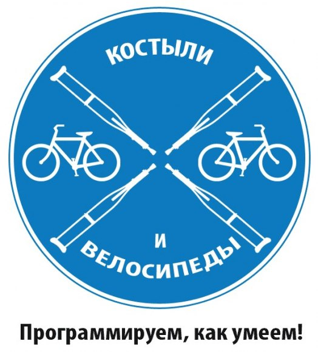

НТР - Костыль и велосипед
Если программисты строили бы дом, Фундамента могло б не оказаться в нем. Четыре стены глухие, двери - потом, Окна - тоже, понадобится - пробьем! Так, что еще нужно? А, крыша! Видишь картон? Бери его, парниша! Тащи его наверх, клади его в два слоя, Чтоб ветром не срывало, к черту остальное. Опять стройка встала, на стройке паралич - Прораб изобретает свой собственный кирпич. Пока косится лавэ, все прорабу трын-трава, Он ходит-напевает эти странные слова Припев Семь бед - один ответ: Костыль и велосипед, Семь бед- один ответ: Вставь костыль, изобрети велосипед Если программисты были бы врачами: "Чувак, сломал ногу" - голвами покачали: "Эй, гляди сюда, такая же нога, Но у меня работает. бугага" У хирурга был бы самый неблагодарный труд: Он все время что-то режет, но люди не встают, Хирург пишет на форуме: "Наверно, мой косяк. Вот фотки со стола, что я делаю не так?" А еще в стационаре есть нацистская бригада, Она следит за тем, чтоб все было так, как надо И не зная праздников, не зная выходных, Отправляет прямо в морг недолеченных больных. Все правильно, конечно - зачем людей лечить, Если можно просто выключить и снова включить, Живыми из больнички не выходят зачастую, Персонал напевает эту песенку простую: Припев Но твой смартфон не звонил бы, черт возьми, Если программисты были б нормальными людьми